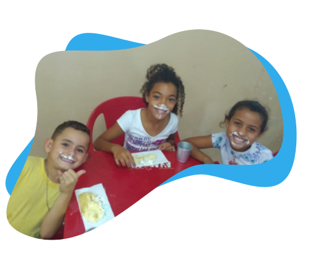

Nossos Projetos
Colônia de Férias

O Núcleo de Atendimento Social "Ângela Martin Bassetto"
realizou a "Colônia de Férias" durante o mês de janeiro.
A colônia ocorreu no período da tarde e foi destinada a todas
as crianças atendidas pelo serviço. Durante esse período,
foi oferecida uma alimentação saudável e diversificada, além de
uma programação com várias atividades recreativas para
que as crianças pudessem aproveitar o período de férias
escolares em um ambiente seguro e agradável.
Aniversariante do Mês

O projeto "Anivesariante do Mês" é uma iniciativa do Núcleo
de Atendimento Social "Ângela Martin Bassetto" com o
propósito de promover acolhimento para comemorar os
anivesariantes do mês. O objetivo principal é proporcionar
um aniversário mais feliz e digno para aqueles que mais precisam.